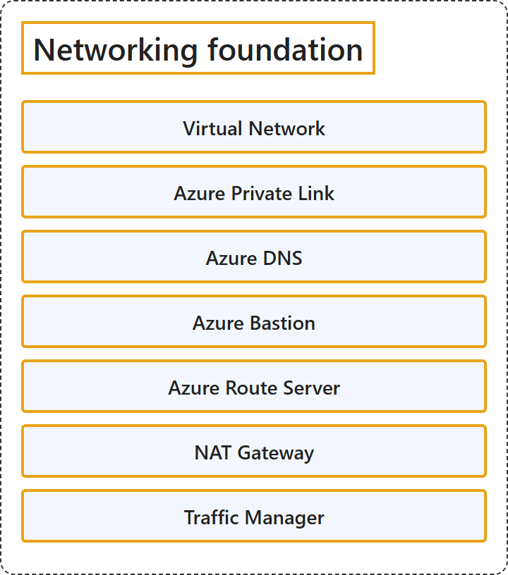

7.1 Networking Foundation
Classification

Glossary
| Term | Definition | 中文翻译 | Source |
|---|---|---|---|
| Virtual Network 虚拟网络 |
"Azure Virtual Network (VNet) is the fundamental building block for your private network in Azure." | Azure 虚拟网络（VNet）是基本构建基块，用于你在 Azure 中的专用网络。 | Microsoft, 2026, "Virtual network" section, para. 1 |
| Azure Private Link Azure 专用链接 |
"Azure Private Link lets you access Azure PaaS services (for example, Azure Storage and SQL Database) and Azure hosted customer-owned or partner services over a private endpoint in your virtual network." | Azure 专用链接让你可以访问 Azure PaaS 服务（例如 Azure 存储和 SQL 数据库）以及 Azure 托管的客户自有服务或合作伙伴服务，通过的是虚拟网络中的专用终结点。 | Microsoft, 2026, "Azure Private Link" section, para. 1 |
| Azure DNS Azure DNS |
"Azure DNS provides DNS hosting and resolution by using the Microsoft Azure infrastructure." | Azure DNS 提供 DNS 托管和解析，使用的是 Microsoft Azure 基础结构。 | Microsoft, 2026, "Azure DNS" section, para. 1 |
| Azure Bastion Azure Bastion |
"Azure Bastion is a service that you can deploy in a virtual network to connect to a virtual machine by using your browser and the Azure portal." | Azure Bastion 是一项可以部署在虚拟网络中的服务，让你连接到虚拟机，使用的是浏览器和 Azure 门户。 | Microsoft, 2026, "Azure Bastion" section, para. 1 |
| Azure Route Server Azure 路由服务器 |
"Azure Route Server simplifies dynamic routing between your network virtual appliance (NVA) and your virtual network." | Azure 路由服务器简化动态路由，这种路由发生在你的网络虚拟设备（NVA）与你的虚拟网络之间。 | Microsoft, 2026, "Azure Route Server" section, para. 1 |
| NAT Gateway NAT 网关 |
"NAT Gateway simplifies outbound-only internet connectivity for virtual networks." | NAT 网关简化仅出站的 Internet 连接，供虚拟网络使用。 | Microsoft, 2026, "NAT Gateway" section, para. 1 |
| Traffic Manager 流量管理器 |
"Azure Traffic Manager is a DNS-based traffic load balancer that distributes traffic optimally to services across global Azure regions, while providing high availability and responsiveness." | Azure 流量管理器是一种基于 DNS 的流量负载均衡器，它把流量以最佳方式分配给全球各个 Azure 区域中的服务，同时提供高可用性和响应能力。 | Microsoft, 2026, "Traffic Manager" section, para. 1 |
References
- Microsoft. (2026, August 19). Azure networking services overview. Microsoft Learn. https://learn.microsoft.com/en-us/azure/networking/fundamentals/networking-overview